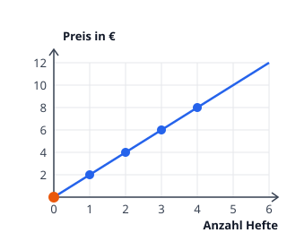
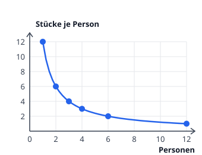

Graphen von Zuordnungen
Mit einem KI-Tutor lernen
Ein KI-Tutor erklärt dir diese Seite und hilft dir bei den Aufgaben. Wähl deinen Assistenten:
Mit Claude öffnen Mit ChatGPT öffnen Mit Mistral Vibe öffnen
Du nutzt dein eigenes Konto beim Anbieter. Der Assistent ist kein Angebot von lernapps.net: lernapps liefert nur Inhalte und Aufgaben. Die Wahl gilt für alle Seiten, nur auf diesem Gerät.
Ziel: Ich kann am Graphen erkennen, ob eine Zuordnung proportional oder antiproportional ist. Du brauchst das Koordinatensystem von der Seite Tabelle und Koordinatensystem und die zwei Tests mit y : x und x · y.
Probier zuerst
Aufgabe
Lösung
Eine gerade Linie, die die y-Achse oberhalb von 0 trifft
Gehst du von (1 | 2) einen Schritt nach links, gehst du auch 2 nach unten – genau auf (0 | 0).
Eine gebogene Linie
Von Punkt zu Punkt geht es immer gleich viel nach oben: 2 für jedes Heft. Darum ist die Linie nicht gebogen.
Eine gerade Linie, die durch den Ursprung (0 | 0) geht richtige Antwort
Jeder Schritt um 1 nach rechts bringt 2 nach oben. Nach links verlängert, landest du bei (0 | 0).
Die Punkte liegen auf einer geraden Linie durch den Ursprung. Das passt: 0 Hefte kosten 0 €.
Gerade oder Hyperbel
Alle Punkte einer Zuordnung zusammen heißen ihr Graph. Bei den Heften liegen sie auf einer geraden Linie, einer Gerade. Sie geht durch den Ursprung, denn 0 Hefte kosten 0 €. Das gilt für jede proportionale Zuordnung: Wegen y = k · x gehört zu x = 0 immer y = 0, und jeder Schritt nach rechts bringt gleich viel nach oben.

Der orange Punkt ist der Ursprung. Je 1 Heft nach rechts geht es 2 € nach oben.
Quelle: eigene Zeichnung. Lizenz: CC-BY-4.0.Bei der Pizza von der vorigen Seite ist x · y = 12, allgemein x · y = c mit einer festen Zahl c. Ihre Punkte liegen auf einer gebogenen Linie, einer Hyperbel. Sie fällt erst steil, dann flach. Sie kommt den Achsen immer näher, berührt sie aber nie: Kein Produkt mit 0 ergibt 12.

Von (2 | 6) zu (4 | 3): doppelt so viele Personen, halb so hoch. Personen gibt es nur ganz – die Linie zeigt, wie die Punkte liegen.
Quelle: eigene Zeichnung. Lizenz: CC-BY-4.0.Ein Beispiel
Das Taxi – eine Gerade, aber nicht proportional
Ein Taxi kostet 4 € Grundgebühr und 2 € für jeden Kilometer. Der Graph Strecke → Preis ist eine Gerade. Sie beginnt aber nicht im Ursprung, sondern bei (0 | 4): Für 0 km zahlst du schon 4 €.

Der orange Punkt liegt auf der y-Achse, nicht im Ursprung.
Quelle: eigene Zeichnung. Lizenz: CC-BY-4.0.Prüfe mit dem Quotienten: Bei 1 km ist 6 : 1 = 6, bei 2 km ist 8 : 2 = 4. Antwort – Die Zuordnung ist nicht proportional, weil die Gerade nicht durch den Ursprung geht.
Nicht jede Gerade ist proportional
Merke
Eine Gerade gehört nur dann zu einer proportionalen Zuordnung, wenn sie durch den Ursprung geht. Und eine fallende Gerade ist keine Hyperbel: Sie trifft die Achsen, eine Hyperbel nie. Dann ist die Zuordnung auch nicht antiproportional.
Jetzt du
Aufgabe
Lösung
Richtige Antwort: Graph A – proportional; Graph B – nicht proportional: Gerade, die nicht durch den Ursprung geht; Graph C – nicht antiproportional: fällt, trifft aber beide Achsen; Graph D – antiproportional
A ist eine Gerade durch den Ursprung, D eine Hyperbel, die die Achsen nie berührt. B beginnt oberhalb des Ursprungs, C trifft beide Achsen.
Aufgabe
Drei Beispielaufgaben, jede mit ihrer Lösung:
Aufgabe Nr. 1
Der Graph einer proportionalen Zuordnung geht durch den Punkt (6 | 3). Welchen y-Wert hat der Graph bei x = 3?
Tipp
Bestimme den Proportionalitätsfaktor k = y : x aus dem Punkt (6 | 3).
Lösung
- Aus dem Punkt (6 | 3): k = 3 : 6.
- Bei x = 3: y = k · 3 = 1,5.
Richtige Antwort: 1,5
Aufgabe Nr. 2
Der Graph einer proportionalen Zuordnung geht durch den Punkt (2 | 4). Welchen y-Wert hat der Graph bei x = 5?
Tipp
Bestimme den Proportionalitätsfaktor k = y : x aus dem Punkt (2 | 4).
Lösung
- Aus dem Punkt (2 | 4): k = 4 : 2.
- Bei x = 5: y = k · 5 = 10.
Richtige Antwort: 10
Aufgabe Nr. 3
Der Graph einer proportionalen Zuordnung geht durch den Punkt (2 | 12). Welchen y-Wert hat der Graph bei x = 5?
Tipp
Bestimme den Proportionalitätsfaktor k = y : x aus dem Punkt (2 | 12).
Lösung
- Aus dem Punkt (2 | 12): k = 12 : 2.
- Bei x = 5: y = k · 5 = 30.
Richtige Antwort: 30
Aufgabe
Drei Beispielaufgaben, jede mit ihrer Lösung:
Aufgabe Nr. 1
Der Graph einer antiproportionalen Zuordnung geht durch den Punkt (6 | 8). Bei welchem x-Wert hat er den y-Wert 2?
Tipp
Rechne zuerst das Produkt x · y für den bekannten Punkt aus.
Lösung
- Aus dem Punkt (6 | 8): x · y = 6 · 8.
- Bei y = 2: x = 6 · 8 : 2 = 24.
Richtige Antwort: 24
Aufgabe Nr. 2
Der Graph einer antiproportionalen Zuordnung geht durch den Punkt (2 | 6). Bei welchem x-Wert hat er den y-Wert 3?
Tipp
Rechne zuerst das Produkt x · y für den bekannten Punkt aus.
Lösung
- Aus dem Punkt (2 | 6): x · y = 2 · 6.
- Bei y = 3: x = 2 · 6 : 3 = 4.
Richtige Antwort: 4
Aufgabe Nr. 3
Der Graph einer antiproportionalen Zuordnung geht durch den Punkt (6 | 5). Bei welchem x-Wert hat er den y-Wert 10?
Tipp
Rechne zuerst das Produkt x · y für den bekannten Punkt aus.
Lösung
- Aus dem Punkt (6 | 5): x · y = 6 · 5.
- Bei y = 10: x = 6 · 5 : 10 = 3.
Richtige Antwort: 3
Aufgabe
Lösung
x · y = 12 richtige Antwort
2 · 6 = 12. Weil das Produkt gleich bleibt, ist der Graph eine Hyperbel und trifft die Achsen nie.
y = 3 · x
Auch hier liegt (2 | 6) auf dem Graphen. Er ist aber eine Gerade durch den Ursprung und trifft damit beide Achsen.
y = x + 4
Auch hier liegt (2 | 6) auf dem Graphen. Er ist eine Gerade und trifft die y-Achse bei 4.
Nur der Graph von x · y = 12 ist eine Hyperbel. Die anderen zwei Gleichungen ergeben Geraden, und die treffen die Achsen.
Aufgabe
Lösung
Richtige Antwort: Die Aussage stimmt nicht.
Der Faktor ist k = 6 : 4 = 1,5. Bei x = 10 ist y = 1,5 · 10 = 15. Der Punkt (10 | 15) liegt auf der Gerade, (10 | 14) knapp darunter.
Damit kennst du die Zuordnungen dieses Kapitels. Als Nächstes kommt die Prozentrechnung – dort rechnest du wie bei proportionalen Zuordnungen erst auf 1 % und dann auf das, was gefragt ist.
Fehler gefunden oder eine Idee für diese App?